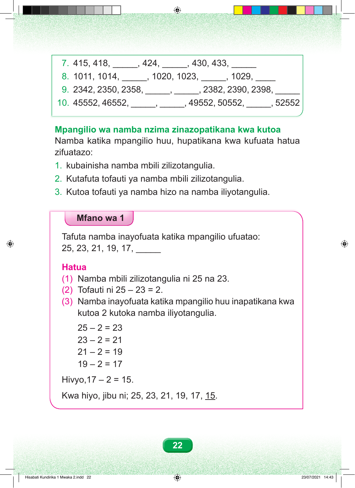

7. 415, 418, _____, 424, _____, 430, 433, _____ 8. 1011, 1014, _____, 1020, 1023, _____, 1029, ____ 9. 2342, 2350, 2358, _____, _____, 2382, 2390, 2398, _____ 10. 45552, 46552, _____, _____, 49552, 50552, _____, 52552 Mpangilio wa namba nzima zinazopatikana kwa kutoa Namba katika mpangilio huu, hupatikana kwa kufuata hatua zifuatazo: 1. kubainisha namba mbili zilizotangulia. 2. Kutafuta tofauti ya namba mbili zilizotangulia. 3. Kutoa tofauti ya namba hizo na namba iliyotangulia. Mfano wa 1 Tafuta namba inayofuata katika mpangilio ufuatao: 25, 23, 21, 19, 17, _____ Hatua (1) Namba mbili zilizotangulia ni 25 na 23. (2) Tofauti ni 25 – 23 = 2. (3) Namba inayofuata katika mpangilio huu inapatikana kwa kutoa 2 kutoka namba iliyotangulia. 25 – 2 = 23 23 – 2 = 21 21 – 2 = 19 19 – 2 = 17 Hivyo,17 – 2 = 15. Kwa hiyo, jibu ni; 25, 23, 21, 19, 17, 15. 22 Hisabati Kundirika 1 Mwaka 2.indd 22 23/07/2021 14:43